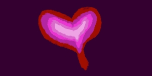
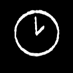
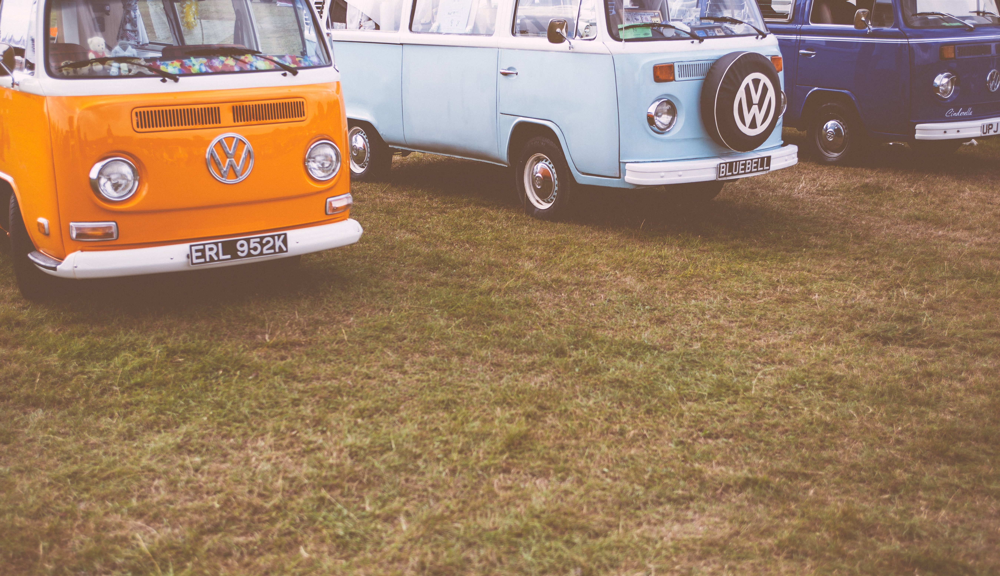
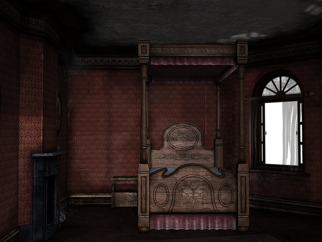
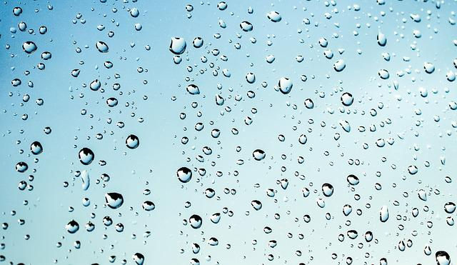

Jakl Logo
enginma9
Jealous of the Birds
Parma Violets
But it scares me
Baby, don't touch me,
I'm made of chalk
Sign up

Don't look at me that way

It's two in the mornin'
and I wanna drink wine
Listening to Kurt
singin' in the pines

Couldn't be any more
hipster if I tried

Wake up tomorrow
and my room's the same

Wanna go dancin'
in the rain?
I love everyone but especially you
Wanna go ahead and pack a picnic just for two?
Is it time for a change?
Get to clicking that button right over there -->
Sign up